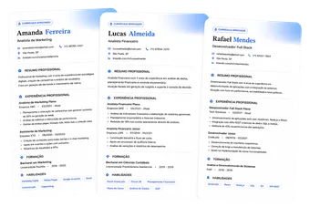
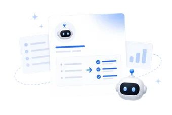

Antes de tudo: a sua resposta importa de verdade.
Cada pergunta vai me ajudar a entender o seu momento profissional e preparar um evento mais personalizado para o que você realmente precisa hoje.
Quanto mais sincero(a) você for, mais o Currículo Perfeito vai falar diretamente com as dificuldades que estão impedindo você de ser visto, chamado e valorizado pelo mercado.
E, ao finalizar, você libera na hora seus 4 materiais exclusivos:
Modelo de Currículo Perfeito
organize suas experiências de uma forma que destaque resultados e chame a atenção dos recrutadores

Banco de Currículos Aprovados
veja currículos reais que já foram aprovados e aplique o mesmo padrão no seu, por área
Vagas Ocultas™
descubra onde estão as oportunidades que nunca chegam aos portais de emprego

Se Venda Melhor
cole sua experiência e deixe a IA reorganizar tudo na forma que mais chama atenção do recrutador
Leva menos de 2 minutos. Vamos começar?